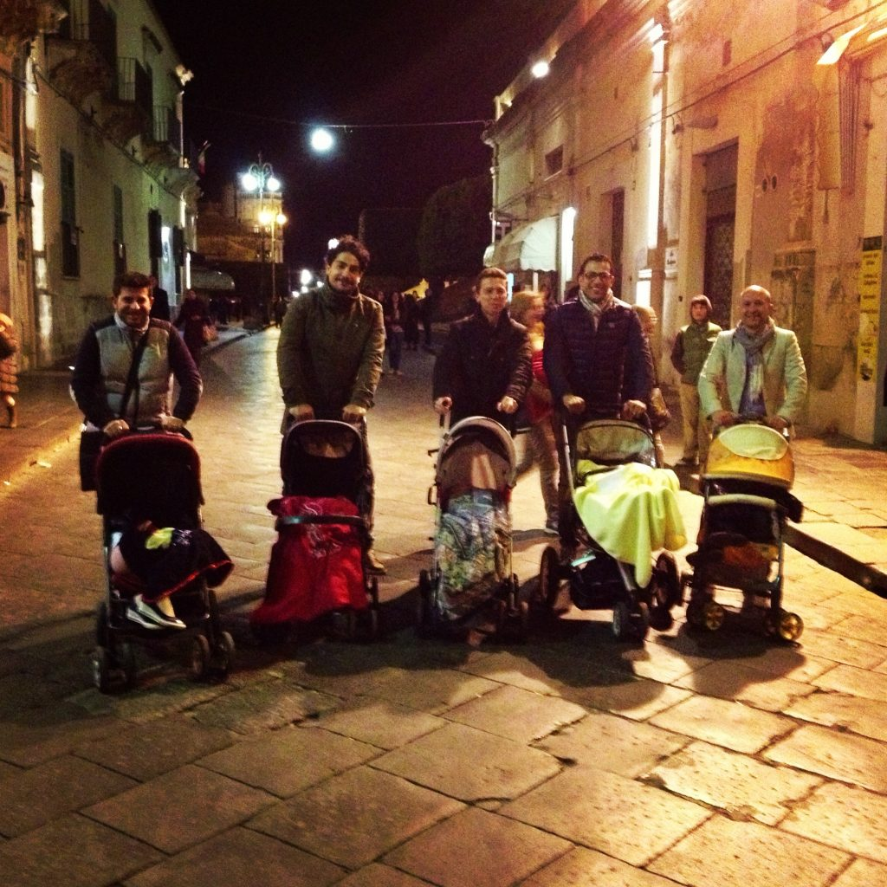

Photo by Francesca Tosolini
Before jumping into the information, let me tell you something about the photo above. In 2014 we were visiting Sicily, when one evening, while we were taking a walk after dinner (and after gelato) on the streets of Noto, we saw this group of Italian dads pushing the stroller. We thought that they were so cute that we asked them to stop and pose for a picture. Now tell me, how many times have you seen five dads in a row pushing a stroller??? Needless to say, they were very gracious (as all Sicilians are) and accepted with pleasures. That said, let's talk about what happens if you go to an Italian restaurant with small children. If you travel with kids don’t expect a high chair (seggiolone) to be in every restaurant you visit. Also, consider yourself lucky if there is a changing table (fasciatoio) in the restroom. Even though restaurants in Italy don't have many kid-friendly facilities, restaurant managers are usually very friendly and sympathetic and will try to help you as best as they can, like providing smaller portions if there isn't a child menu or cushions in case a high chair is not provided. {This is an excerpt from chapter 3 “Italian cuisine” of the eBook “Italy from the Inside. A native Italian reveals the secrets of traveling in Italy”. To buy our eBook click here}